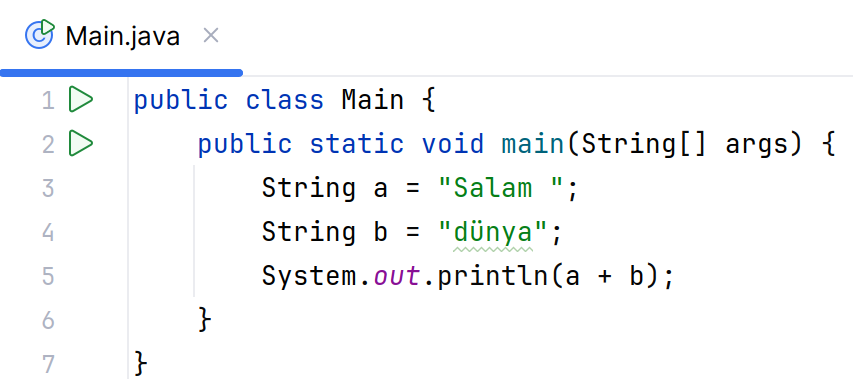
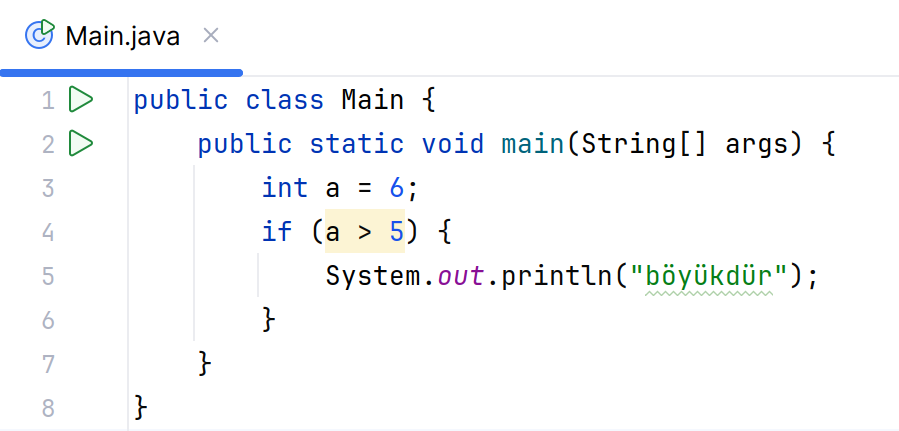
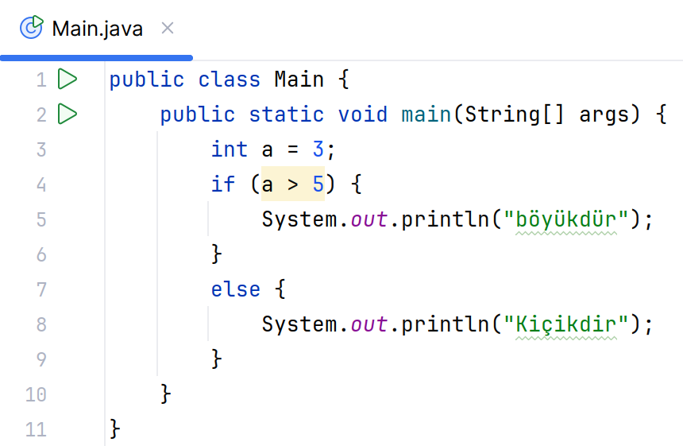
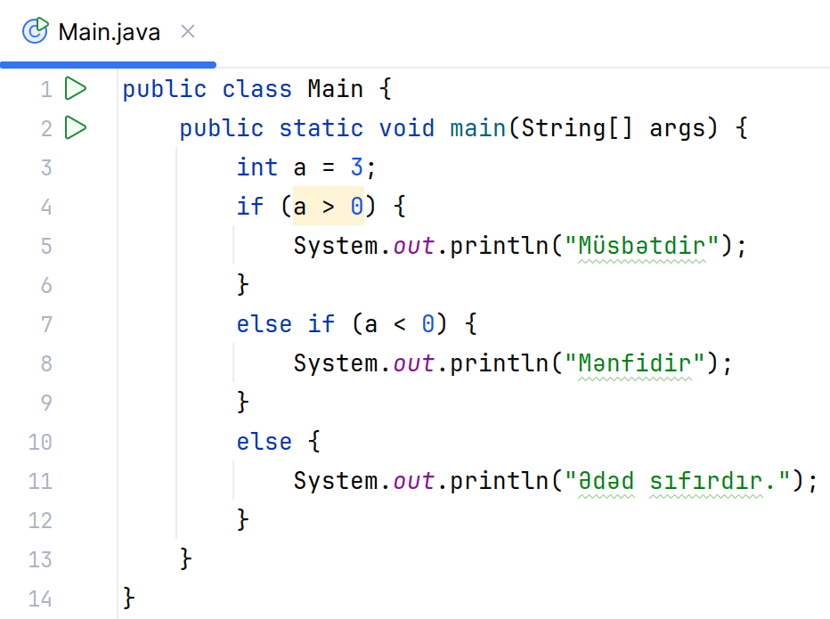

QEYD! Yadda saxlamaq lazımdır ki, əgər hər iki dəyişən tam
ədəd tipindədirsə bu bölünmə tam bölünmə
olacaq. Qalıq nəzərə alınmayacaq.
Bu operator ədədin digər ədədə bölünməsindən alınan qalıqı hesablayır.
String üçün yalnız toplama operatoru var. Bu sadəcə mətnləri birləşdirir.

Java dilində kod yazdıqda bəzən koda əlavə şərhlər qeyd etməyə ehtiyac olur.
Java Commentləri ilə, elə sətrlər yaza
bilərik ki, bu proqram icra olunduqda,
java tərəfindən "görməzdən gəlinir". Commentlərin 2 növü var:
Bir sətrlik comment yazmaq üçün sətrin əvvəlinə // əlavə etmək lazımdır.
Sətrdə bu işarədən sonra yazılan heç bir simvol
java tərəfindən oxunmur.
Çox sətrlik commentin açılışı və bağlanışı olur. Başlanğıc üçün /* bitirmək üçün */ .
Bu ikisi arasındakı bütün sətrlər
commentə əlavə olunur.
Javada proqramın irəliləməsini şərtə görə dəyişmək üçün şərt operatorundan istifadə olunur. Tutaq ki, bizim bir kod hissəmiz var ki, onun yalnız müəyyən şərt ödəndikdə icra olunmasını istəyirik. Məsələn a dəyişənimin qiyməti 5-dən böyük olduqda "böyükdür" yazısı çap olunmasını istəyirik.
Bu zaman yalnız a dəyişəni 5-dən böyük olduğu halda if-in mörtərizələri daxilindəki kodlar işləyəcək. Əks halda işləməyəcək.
Əgər ki, bu şərt ödənməyəndə də müəyyən kodların icra olunmasını istəyirik. Bu zaman if-in mörtərizələrindən dərhal sonra else açar sözünü yazıb birbaşa mörtərizələri açırıq.
Tutaq ki bizdə bir neçə şərt var. Bu zaman if else-dən istifadə olunur.
